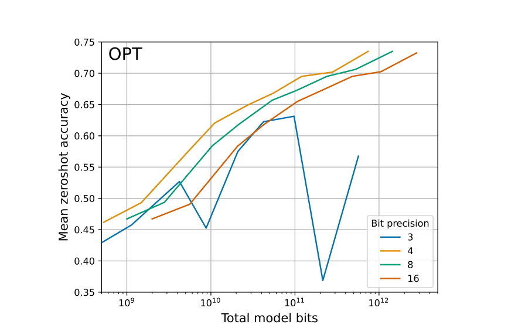

%%time
#Installations
%pip install -q transformers accelerate bitsandbytes peft safetensors torch
%pip install -q sentencepiece protobuf
%pip install -q scipy
%pip install llama-recipes fastcore "transformers!=4.38.*,!=4.39.*" --extra-index-url https://download.pytorch.org/whl/test/cu118
%pip install bitsandbytes>=0.43.0Efficient finetuning of Llama 3 with FSDP QDora on the Uganda Clinical Guidelines using consumer GPU’S
Using Consumer GPUs for Large Language Model Training
machine-learning
llm
finetuning
medical-ai
fsdp
qdora
Abstract
This tutorial demonstrates how to fine-tune Meta’s Llama 3 70B parameter model using FSDP QDora (Fully Sharded Data Parallel + Quantized DoRA) on the Uganda Clinical Guidelines dataset. We achieve this using consumer-grade GPUs (2x RTX 3090 24GB), making large model training accessible to researchers and practitioners without access to expensive enterprise hardware.
Background
The Ugandan Ministry of Health and its partners published the Uganda Clinical Guidelines to help give practitioners access to the latest up-to-date information on how to diagnose and manage common health conditions in Uganda.
You can find a link to the Uganda clinical guidelines here.
To quote the Clinical guidelines book itself,
What is the aim of the UCG?
The UCG aims to provide summarized easy-to-use, practical, complete and useful information on how to quickly and correctly diagnose and manage common conditions you are likely to encounter. This will ensure that patients receive the best possible clinical services and obtain prompt and effective relief from or cure of their complaint, thereby making the most appropriate use of scarce diagnostic and clinical resources, including medicines. It should, however, be emphasised that the UCG does not replace or substituteavailable textbooks on the subject.
Why is the UCG necessary?
Medicine is an ever-evolving and expanding field in terms of needs and knowledge. The UCG helps the country to prioritize and effectively use limited resources by guiding the procurement system to ensure the availability of the most needed medicines and supplies. In the context of new knowledge and changing priorities, as a tool, the UCG assists health workers in their daily practice by providing information in an easy-to-follow and practical format.
With this, we are experimenting with fine-tuning a large language model like llama on these guidelines. The hope is that this model can be used as a basis for an assistive tool.
The Uganda clinical guidelines have over 1000+ pages containing information such as clinical features, causes, differential diagnoses, treatment, and prevention options for many common health complaints in Uganda.
Training
I shall be fine-tuning a Llama370B parameter model using FSDP QDora, an open-source system first introduced in this answer.ai post. This system is an extension of FSDP QLora which is a combination of FSDP and QLora.
Background
QLora was made possible by 2 advances in neural networks, namely quantization and LORA.
Quantization
Quantization reduces the number of bits used to represent parameters in a model; here we find ourselves trading off between zero-shot accuracy at inference time and model bits.
For example, instead of using 32 or 16 bits to store the weights of a neural network, we can use a smaller number of bits, like 4. A 4-bit number is equivalent to (2 x 2 x 2 x 2) and has only 16 possible values.
Tim Dettmers & Luke Zettlemoyer released a paper that showed that they ran an experiment to determine the bit precision that maximizes one-shot learning. We can see that the zero-shot accuracy increases steadily for fixed model bits from 16 up to 4-bit quantization precision. When we reach 3 bits, we can see that the relationship reverses.
Refer to the image below from the original The case for 4-bit precision: k-bit Inference Scaling Laws paper.

4-bit precision was shown to be the best precision value that universally optimizes both total model bits and zero-shot accuracy. Tim Dettmers built the bitsandbytes library, making it easy for anyone to create 4-bit quantized models.
The main drawback of quantization is the fact that once model parameter are quantized they can no longer be updated to learn new information, meaning these can only be used for inference and cannot be fine-tuned to learn new task representations.
LORA (Low Rank Adaptation of Large Language Models)
Nowadays, we can see a various number of large language models being adapted and used for a variety of downstream tasks. Most of these are developed by taking an off-the-shelf large language model like Llama 3 and further training its parameters, adapting it for specific tasks. Training all of its parameters can be called full fine-tuning.
Now this is manageable for small models, but think of the Llama3 70B model, which would need at least 140 GB of memory just to store and load the model’s weights. This quickly gets expensive and impractical for anyone outside a well-funded lab. People tried working around this by adapting techniques such as training only some parameters or attaching extra modules trained on the specific task. With this, we only need to store and load the parameters adapted for this specific task, which are generally just a small percentage of the total parameters. We can then load this together with the pre-trained model, resulting in improved efficiency.
However it was noticed that doing this lead to increased latency due to increased complexity and can also lead to a reduced context length window. We also saw that these methods failed to match the full finetuning performance. Taking inspiration from papers from Armen Aghajanyan, Luke Zettlemoyer, and Sonal Gupta. Intrinsic Dimensionality Explains the Effectiveness of Language Model Fine-Tuning etc which showed that despite having a large number of parameters, we do not actually need to change all the parameters to capture new information, the parameters lie in a low dimensional space and have low instritic value meaning the change in weights needed to adapt a pretrained model to a new task are of low instrictic value.
So they proposed freezing the model parameters, then injecting small decomposition matrices that capture the necessary task-specific changes in between the model layers achieving performance that can match full finetuning but without having to retrain all the billions of parameters.
taking the matrices of the model and creating simpler representations, we take a matrice and replace it with 2 matrices which when combined result in the same thing but with less parameters. Once trained these matrices are injected back into the original weights.
You can watch Edward Hu one of the authors of the LoRA paper explain it over here
QLoRA
Tim Dettmers realized that one can get around the limitation of qunatization and its inability to adjust quantized parameters, he could use LoRa.
All in all, LoRA enables us to adapt a language model to new task by freezing the current weights, then injecting some small matrices that represent the changes needed to adapt the model to a new tasks into the model. Doing this, we are able to learn the new task while achieving performance comparable to that of full fine-tuning without having to re-train all our parameters drastically reducing the storage and computation needs. If performance doesn’t match, you can always increase the number of trainable parameters and the rank, making LoRA easy to use and adapt in various use cases.
Tim Dettmers and his team from the University of Washington were able to combine LoRA with quantization by quantizing the pretrained model parameters, then adding these non-quantized low rank adaptor weights learnt using LoRA to the model creating QLoRA. With this, they were able to train a 65B parameter (130 GB unquantized) model on a 48GB card while maintaining 16-bit precision performance. QloRA keeps the main models quantized weights frozen, then updates gradients by passing them through these quantized weights learning which gradients to learn update, then using these to update the small adaptor weights.
QloRA introduced a number of innovations which reduce memory use without sacrificing performance resulting in better LoRA performance. Things like paged optimizers which avoid the memory spikes associated with gradient check pointing when processing a mini batch with a long sequence length.
PEFT
Huggingface created the PEFT Parameter-Efficient Fine-Tuning of Billion-Scale Models on Low-Resource Hardware library which enabled training of models using LoRA and QLoRA together with the bitsandbytes library with just a few lines of code making it easy for anyone to do this.
However there were still a large number of issues for example a single 48GB GPU card can be quite expensive, as 48GB of memory would not be effective enough to store all the model weights, gradient, optimizers and optimization states. Not to mention the model trained has a limited model sequence length limiting the size of the prompts we can pass the model. Inorder to be able to pass our model long text prompts we need to have a model that has seen such long sequences of text during training.
Passing our model long sequence texts results in an error as our 48GB GPU wouldnt have enough memory to store all the information about this sequence as all the memory is used to be able to store just the model weights. Memory constraints also limit the batch size leading to increased training times as we can only pass our model a small number of examples at a go.
FSDP
What if we could use multiple GPU’s for training, could this help us get around our memory constraints ?
We could split our model into and train some layers of each GPU. In our previous example of training a 65GB model (130GB), if we used 8 24GB GPU’s, we could split up our 130GB among 8 and put 16.5 GB on each 24GB card. This is what our device_map=auto in huggingface transformers does. However this has a limitation as this training process does not happen in parallel meaning it waits for the training on one device to finish then trains the next in that order. This doesnt really full take advantage of our multiple GPU’s.
We could try Distributed Data Parallel, DDP which enables us to do parallel training with each GPU processing a different batch of data, the only downside was that we need to the full version of the model weights and optimizer states onto each GPU while leaving enough memory to store all the other data from the training process, meaning for our 65GB model, we would still need the Individual GPUs to be able to store each model on a single GPU etc not solving our problem of resource constraints.
How can we get the best of best worlds, being able to split like with device_map=auto and train our model on multiple GPU’s in parallel like in DDP.
This is where FSDP, Fully Sharded Data Parallel from the PyTorch team comes in handy. FSDP Shards model parameters, gradients and optimizer states across various GPU’s.
FSDP will copy all the parameters required to compute gradients during its forward pass are gathered as unsharded parameters. The gradients are then computed and sharded after. The optimizer finally updates the sharded parameters with sharded gradients resulting in new sharded optimizer states.
The sharded gradients are distributed across our GPU’s allowing each shard to do it own local update.
In short, the gradients computed are for all parameters but since the parameters have been sharded across different devices, we have to redistubute the parameters across all devices so that each local shard can make updates based on the calculated gradients spoecific to it
FSDP was shown to have identical results as the standard data parallel methods while being memory efficient. This finally gave us the ability to train our large model on cards smaller than the individual model given a number of them.
FSDP_QLoRA
Now FSDP does a good job helping us split our tasks among different workers, but even then using 8 24GB GPU’s which would still be cost prohibitive especially if you are going to experiment alot. The team at answer.ai, bitsandbytes and huggingface theorized that we could even do this by combining FSDP with QLoRA. Jeremy and Titus Von Keller from huggingface linked up to try bring FSDP and QLora together. Their goal was to explore, understand and document any issues arising when combining the 2 libraries.
You can read about their thought processes and how they came up with this in their introductory FSDP_QLORA blog post. You can do a deep dive into their implementation here
The team at answer.ai and bitsandbytes experimented with using quantized parameters that are stored in a selectable data type which is the same data type as the computation type of the model.
fsdp only supports floating point data types, as neural network operations such as gradient calculations primarily work or produce results which are floating point data types, but quantization libraries store quantized weights as integer data types. This is because quantization involves moving the values from fp32 / fp16 to int8/int4 format Using integer data types instead of floating point saves memory for example when we got from using 32 or 16 bits which are stored as fp32 format to int8 (8 bit format)
the solution from Jeremy and Titus was to store the quantized parameters in the a selectable storage data type which should be the same computation type as the model, basically they store the qunatized weights as floating point values but preserve the quantization effect/benefits through storing these floating ppint values using discrete value levels constraining the values to quantized ranges or the discrete values.
Here i mean that say we have 8 discrete values specifically -1.000, -0.714, -0.429, -0.143, +0.143, +0.429, +0.714, or +1.000., with 8 discrete levels, every single weight in your model must be exactly one of those 8 specific values: -1.000, -0.714, -0.429, -0.143, +0.143, +0.429, +0.714, or +1.000. No other values are allowed.
So if your original neural network had weights like:
-0.891 → gets mapped to -1.000 (closest discrete level) -0.502 → gets mapped to -0.429 0.025 → gets mapped to +0.143 0.891 → gets mapped to +1.000
But they soon hit another wall when they noticed that FSDP wasnt quite copying the quantized state infromation needed for each shard to run the model.FSDP only syncs pytorch parameters and buffers, but most quantization libraries store the quantization metadata is usually stored in dictionaries.
They resolved this by quantizing the model on each GPU so the metadata would remain on that particular GPU. Here they shard the unquanitzed paramaters across the multiple GPU’s then quantize the model on the GPU. They also moved the quantization state from the parameters to the layers, With this the quantizsation state metadata is always available to ensure the information need to dequantize the parameters stayed on the GPU during fsdp shards.
They then submitted this fsdp_qlora intergartion to the bitsandbytes library as a pull request.
Once again they ran into another bottleneck, since we are now quantizing the model after loading it on the GPU, we need to have our model fit on the GPU then quantize it, which brings about the obvious problem of having a bigger model than the GPU itself in the case of our bigger models like the 70B llama. So we need a method that would allow us to just use the shards while still being able to do accurate quantization so we dont have to load the whole model on a single GPU.
Jeremy studied meta’s Llama recipes (Now called Llama cookbook), which is a well put together compilation showing how to finetune, do RAG etc with Llama using FSDP. By studying how they work with various libraries like PEFT, Accelerate and Transformer, he was able to come up with a script that could manually complete all the steps needed to fine tune a model.
Benjamin Warner from answer.ai figured out how to load and discretize the model layer by layer, enabling us to now use qunatize without the full model needing to be on one gpu.He also figured out how to prevent PEFT from moving the quantization state to CPU.
With this, we are able to combine FSDP’s ability to shard parameters, optimizer states and gradients across our different workers, 4 bit quantization, and use of the small injectable adaptors from LoRA and finally finetune a 70B parameter model on 2 dual 24 GB 3090 Nvidia cards. Doing this, they took advantage of various techniques developed by the open source community and academia such as gradient checkpointing, CPU offloading and Flash attention 2.
Adding HQQ
The bits and bytes way of doing quantization can lead to memory loss. Bits and bytes normalizing its weights to a given consistent range, the parameters are then each placed in a bucket where the bucket breakpoints are based on the assumption that the parameters are normally distributed, but if this isnt the case. In real world scenarios, parameters may not follow a uniform distribution and due to this accuracy may suffer.
A different approach is to optimize the quantization parameters based of their actual behaviour when passed representative data. These have the advatage that they produce more accurate models as the optimization is based of the actual parameter behaviour, the downside is it can take hours, sometimes days to do this optimization process. HQQ combines the best from both approaches.
The answer.ai team managed to get FSDP to work with HQQ too. HQQ is created by the team at Mobius Labs who recently released a pure 1 bit quantized model.
DoRA
It was noted that in some cases, LoRA fails to match the performance of full finetuning.
In 2024, The DoRA: Weight Decomposed Low-Rank Adaptation paper was put out. Here they introduce a novel weight decomposition analysis and use it to investigate the inherent difference between LoRA and full finetuning.
To improve LoRA and bring it closer to Full Training performance, they propose DoRA which reparametizes the pre-trained weights into 2 components, Magnitude and direction with LoRA being used to make directional updates efficiently minimizing the number of trainable parameters.
It was shown that LoRA and full finetuning have different learning patterns for the weight updates while DoRA and Full training have similar learning behaviour. DoRA was shown to outperform LoRA on multiple datasets while maintaining the latency of LoRA.
Llama-Pro
In the Llama-pro: Progressive LLama with block expansion, Large language models are enhanced using a technique called block expansion.
This technique strategically adds Transformer blocks in between the neural network layers, to improve model specialization without sacrificing existing capabilities. These transformer decoder blocks are trained to learn the new patterns, while the rest of the layers are frozen and quantized.
FSDP_QDoRA
Answer.ai’s implementation of FSDP_QDoRA closely mirros the QLoRA implmentation where the pre-trained model weights are frozen, qunatized using bitsandbytes, with the adaptors added on top to learn the new patterns
FSDP_QDoRA on the Ugandan Clinical Guidelines
To train with FSDP_QDoRA, we start by cloning the fsdp_qlora repo.
Clone https://github.com/AnswerDotAI/fsdp_qlora pip install llama-recipes fastcore "transformers!=4.38.*,!=4.39.*" --extra-index-url https://download.pytorch.org/whl/test/cu118 as an easy way to get most dependencies (replace 118 with your desired Cuda version)
Install bitsandbytes pip install bitsandbytes>=0.43.0
Run huggingface-cli login (to access Llama 2)
Optional Libraries: HQQ quantization: follow the HQQ installation instructions. Our training script uses HQQBackend.ATEN_BACKPROP, so also make sure to build the custom kernels cd hqq/kernels && python setup_cuda.py install.
Weights and Biases logging: pip install wandb
Pytorch >= 2.2 is recommended to make use of the native flash-attention 2 kernel.`
Dataset
We parsed the data from the clinical guidelines, putting it into the Alpaca format, which is one of the expected formats.
Code
Below is the code i ran after cloning the answer.ai repo
#@title [Optional] Login to the Hugging Face Hub
#@markdown Add a token with the "Write Access" role to be able to add your trained concept to the [Library of Concepts](https://huggingface.co/sd-concepts-library)
from huggingface_hub import notebook_login
notebook_login()import torch
from transformers import AutoTokenizer, AutoModelForCausalLM, BitsAndBytesConfig
from peft import PeftModel, PeftConfig
import warnings%%bash
cd fsdp_qlora
python train.py \
--train_type bnb_dora \
--model_name meta-llama/Meta-Llama-3-70B \
--dataset uganda_clinical_guidelines \
--dataset_samples 130 \
--batch_size 4 \
--context_length 2048 \
--gradient_accumulation_steps 2 \
--sharding_strategy full_shard \
--use_gradient_checkpointing true \
--reentrant_checkpointing true \
--use_cpu_offload false \
--use_activation_cpu_offload false \
--project_name "fsdp-quantized-ucg" \
--save_model true \
--output_dir ../models/Llama-3-70b-ucg-bnb-QDoRA%%time
# Option 1: Simple inference test
import torch
from transformers import AutoTokenizer, AutoModelForCausalLM
import safetensors
# Load the base model and tokenizer
model_name = "meta-llama/Meta-Llama-3-70B"
tokenizer = AutoTokenizer.from_pretrained(model_name)
model = AutoModelForCausalLM.from_pretrained(
model_name,
torch_dtype=torch.bfloat16,
device_map="auto"
)
# Load your fine-tuned DoRA weights
# Note: This is a simplified approach - actual DoRA loading is more complex
dora_weights_path = "models/Llama-3-70b-ucg-bnb-QDoRA/model_state_dict.safetensors"
# Test with a Uganda clinical guidelines question
def test_model(prompt):
inputs = tokenizer(prompt, return_tensors="pt").to(model.device)
with torch.no_grad():
outputs = model.generate(
**inputs,
max_new_tokens=2000,
temperature=0.7,
do_sample=True,
pad_token_id=tokenizer.eos_token_id
)
response = tokenizer.decode(outputs[0][inputs['input_ids'].shape[1]:], skip_special_tokens=True)
return response
# Test prompts for Uganda clinical guidelines
test_prompts = [
"I have a fever and headache. What should I do?",
"I have a pain that feels like a muscle strain around my 2 bottom ribs, on the left side, it has been going on for 3 days",
"The patient is a 35-year-old male with a history of hypertension and diabetes. He presents with a 2-week history of progressive dyspnea and lower extremity edema. What is the most likely diagnosis?",
"How should one manage a snake bite?",
"A patient is presenting fever, lower back pain, joint pains, and fatigue. how should one proceed to diagnose and treat the patient?",
"A patient is presenting severe headache for the last few days that's worse in the mornings, nausea, vomiting, lightheadedness, and blurry vision. How should one proceed to diagnose and treat the patient?",
"A patient is presenting pain and swelling in knees and wrists especially in the morning that improves during the day, fatigue, and a rash on the face. How should one proceed to diagnose and treat the patient?",
"A patient is presenting excessive thirst, increased urination, blurred vision, and unexplained weight loss. How should one proceed to diagnose and treat the patient?",
]
print("Testing your fine-tuned model:")
for i, prompt in enumerate(test_prompts, 1):
print(f"\n--- Test {i} ---")
print(f"Prompt: {prompt}")
print(f"Response: {test_model(prompt)}")
print("-" * 50)from huggingface_hub import HfApi, create_repo
from pathlib import Path
import json
# Configuration
model_path = "models/Llama-3-70b-ucg-bnb-QDoRA"
repo_name = "silvaKenpachi/Llama-3-70b-uganda-clinical-fsdp-qdora" # Change to your username
base_model = "meta-llama/Meta-Llama-3-70B"
# Create repository
api = HfApi()
try:
create_repo(repo_id=repo_name, private=True) # Set private=False if you want it public
print(f"Created repository: {repo_name}")
except:
print(f"Repository {repo_name} already exists")
# Upload all files from your output directory
api.upload_folder(
folder_path=model_path,
repo_id=repo_name,
repo_type="model",
commit_message="Upload Llama-3-70B QDoRA adapter fine-tuned on Uganda Clinical Guidelines"
)
print(f"✅ Model uploaded to: https://huggingface.co/{repo_name}")
##### Code
in `if args["dataset"] == "alpaca":
dataset = load_dataset("yahma/alpaca-cleaned")['train']
elif args["dataset"] == "alpaca_sample":
dataset = load_dataset("yahma/alpaca-cleaned", split=f"train[:{args['dataset_samples']}]")
elif args["dataset"] == "dummy":` replace `yahma/alpaca-cleaned` with `silvaKenpachi/uganda-clinical-guidelines` or the relevant dataset
`
# To add a new model, import the transformer, attention, & MLP layers
# for the wrapping policy and `check_fn` in activation checkpointing
from transformers.models.llama.modeling_llama import (
LLAMA_ATTENTION_CLASSES,
LlamaDecoderLayer,
LlamaMLP,
)
from transformers.models.mistral.modeling_mistral import (
MISTRAL_ATTENTION_CLASSES,
MistralDecoderLayer,
MistralMLP,
)`
replace LLAMA_ATTENTION_CLASSES and MISTRAL_ATTENTION_CLASSES as below
`# To add a new model, import the transformer, attention, & MLP layers
# for the wrapping policy and `check_fn` in activation checkpointing
from transformers.models.llama.modeling_llama import (
LlamaAttention,
LlamaDecoderLayer,
LlamaMLP,
)
from transformers.models.mistral.modeling_mistral import (
MistralAttention,
MistralDecoderLayer,
MistralMLP,
)`
##### change 3
in
`# Wrap the model using LoRA policy from llama-recipes or custom policy:
# This checks for lora layers (has weight and requires_grad)
def get_wrapping_policy(custom_policy:bool=False, vanilla_policy:bool=False):
from peft.tuners import PrefixEncoder, PromptEmbedding, PromptEncoder
if custom_policy:
def lambda_policy_fn(module):
# LoRA and DoRA trainable layers.
return (isinstance(module, nn.Sequential) and all(m.weight.requires_grad for m in module)) or (isinstance(module, (DORALayer, MagnitudeLayer)))
else:
def lambda_policy_fn(module):
return (
len(list(module.named_children())) == 0
and getattr(module, "weight", None) is not None
and module.weight.requires_grad
)
def self_attn_policy_fn(module):
# Check module name is self_attn.
return isinstance(module, tuple((*LLAMA_ATTENTION_CLASSES.values(), *MISTRAL_ATTENTION_CLASSES.values())))` replace return isinstance(module, tuple((*LLAMA_ATTENTION_CLASSES.values(), *MISTRAL_ATTENTION_CLASSES.values()))) as below
` return isinstance(module, (LlamaAttention, MistralAttention))`NameError: name 'fsdp_qlora' is not defined
Below are the different arguments for the fsdp_qlora function in our train.py
Args:
world_size: Number of GPUs to use. -1 = all available GPUs.
train_type: "full", "lora", "qlora", or "custom_qlora"
llama_pro_path: Path to the quantized llama pro model
batch_size: Batch size per GPU. Effective BS = batch_size * world_size * gradient_accumulation_steps
context_length: Max length of input sequence (in tokens)
gradient_accumulation_steps: How many steps to accumulate gradients over (increases effective batch size)
num_epochs: How many epochs of training to do
dataset: alpaca, alpaca_sample (for a 128-sample test) or "dummy" for 16 long dummy samples
dataset_samples: Number of samples in an epoch if using "alpaca_sample" or "dummy" dataset
sharding_strategy: Sharding strategy for FSDP
use_gradient_checkpointing: Use FSDP's activation checkpointing
reentrant_checkpointing: Use re-entrant autograd activation checkpointing. Setting to True can use less GPU memory with BNB QLoRA
use_cpu_offload: Use FSDP's CPU offloading
use_activation_cpu_offload: Use FSDP's activation CPU offloading
low_memory: Load one copy of the model into CPU memory before sharding with FSDP. For QLoRA, quantizes each layer individually on GPU before placing on CPU.
no_sync: Prevent gradient sync until update step. Likely uses more memory. Required for `use_cpu_offload` and `gradient_accumulation_steps > 1`
precision: Training precision. autocast precisions use mixed precision
model_name: Which model to train - e.g. "TinyLlama/TinyLlama-1.1B-Chat-v1.0",
save_model: Save the resulting model
output_dir: Output directory to save the final model to
lora_rank: LoRA rank for lora/qlora
lora_alpha: LoRA alpha for lora/qlora
lora_dropout: LoRA dropout for lora/qlora
lora_target_modules: If 'default', uses peft defaults. Use 'all' for our best guess for Llama models
verbose: Whether to print extra info for debugging
lr: Learning rate
apply_gradient_clipping: Apply gradient norm clipping
grad_norm: Gradient norm clipping
wd: Weight decay
profile_memory: Profile memory usage for the first few batches. Keep false for training. May increase memory usage.
optimizer: Optimizer. PyTorch 2.4 nightly adds CPU fused Adam/AdamW which should improve offload training speed.
lr_scheduler: Learning Rate Scheduler. linear and cosine warm up for 10% of training steps.
loading_workers: Number of layers to load and quantize in parallel per GPU. Default of -1 uses heuristics to set worker count.
log_to: Where to log output
master_addr: For distributed training
master_port: For distributed training, must be the same for all processes
seed: Random seed
project_name: For wandb logging
name: For wandb logging
group: For wandb logging
entity: For wandb logging
n_bits: passed to hqq
profiling_output: Output file for profiling